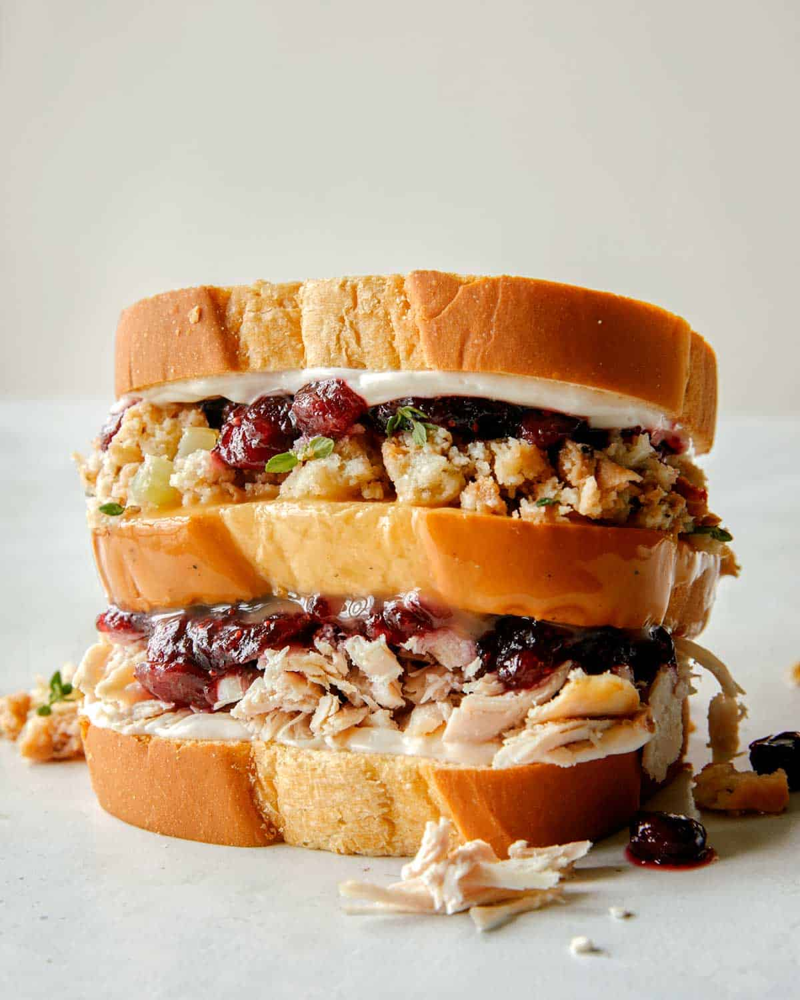

Ross's Sandwich

Description
“My sister makes these amazing turkey sandwiches. Her secret is, she puts an extra slice of gravy soaked bread in the middle. I call it the Moist Maker.” — Ross
Guys, this is THE sandwich, made from leftover Thanksgiving food, that’s good enough to cause a nervous breakdown. When Ross’s sandwich is stolen from the museum fridge, it’s the straw that breaks the camel’s back (Ross’s back) after a hard year... and yeah, another failed marriage.
Ingredients
- 3 slices bread
- 2 tablespoons mayonnaise
- 1/2 cup cranberry sauce
- 6 ounces roasted turkey, thinly sliced
- 1/2 cup stuffing
- 2 green leaf lettuce leaves optional
- 1/2 cup turkey gravy
Steps
- Spread a small amount of mayonnaise onto two slices of bread.
- Dip the remaining slice of bread in gravy and set aside.
- Build the sandwich however you like, placing the gravy soaked bread in the center.
- Gently push together and enjoy!